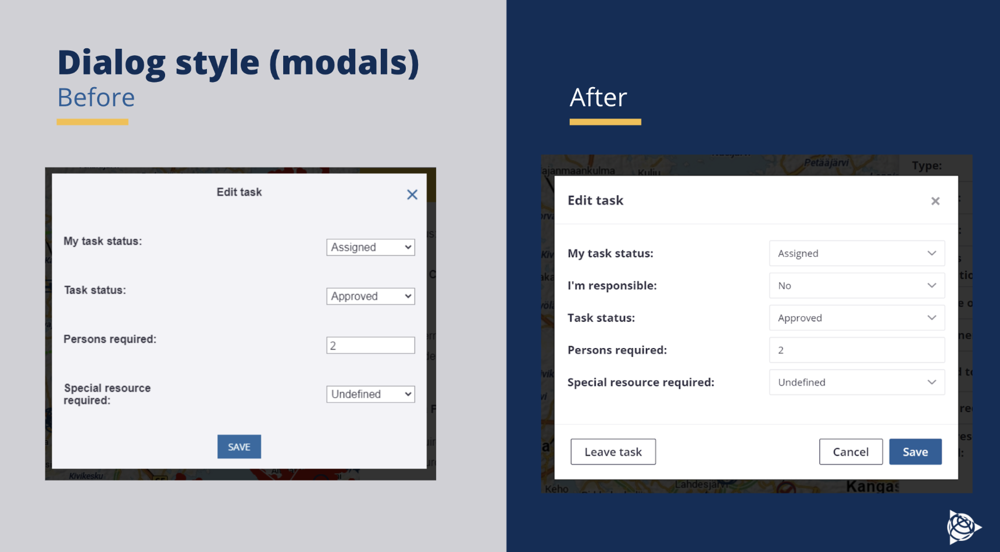

Trimble Inc.
Web Component Library
Business Goals and Objectives
With Modus Design System we are aiming to accomplish two main goals in line with Trimble business strategy of standardization and scale:
Systemize the Trimble product interfaces
- Define guiding design princples and foundations.
- Define and standardize reusable design components.
- Establish a pattern library.
- Set up master design files with up-to-date patterns in Sketch, Figma, and Adobe XD.
- Refactor code and front-end architecture to support the modular approach for Bootstrap, Angular Material, and React.
Establish shared processes and governance
- Set up knowledge-sharing processes through conversations, collaboration, pairing, and training.
- Promote the component and pattern library and encourage its use across the company.
- Promote shared design language across teams and disciplines.
- Transition and share best research-based usability with a dedicated design systems team to curate content and support from an open source contributions.
Utility to Go Project Goal
The Utilities and Public Administration and NIS Product Development, started pondering what to do with one of our flagship products Utility to Go (UTG). It needed a freshen-up, a new top coat as it were. What had started out as a simple tool for field work to coordinate network repairs, locate network objects and faults, and improve data integrity with immediate updates in the field had bloated over the years. This product had a stable role in all of the major energy companies, but there hadn’t been much front-end resources spared for keeping the look-and-feel consistent. To fix this, we needed something that would allow the UX team to handle design work quickly and be confident that, once handed over to development, it would be easily executed according to the specs and design flows. This is where Modus came in. The goal was to test out with UTG, if Modus could get rid of heavy design work, unify styles, and get consistency. This would in turn solidify our plans of expanding the design system to the rest of the NIS product family.
Process
When it came to design work, I felt that Modus gave the terminology to be able to convey ideas easily to the rest of the team. What before had taken custom layout drawings in Sketch was now conveyed in wireframes and referrals to specific Modus components. Communication became easier, and the Modus Design System enabled this. Design work became more about thinking through user flows and less about simple UI components. By the end of the adoption process we could really start thinking about solving user problems, not just UI problems. It was thrilling to see this change in such a short amount of time.
Design Work
Takeaways
Design work has gone from making custom layout designs in Sketch to easily discussing components and wireframing with developers. What used to take days/weeks takes hours if everyone is on the same page and talks Modus. We are able to hold more productive workshops and focus on user problems, not only UI problems. Design specs are not just handed over, hoping everyone is on the same page; Now there is more communication and understanding with the common tool.